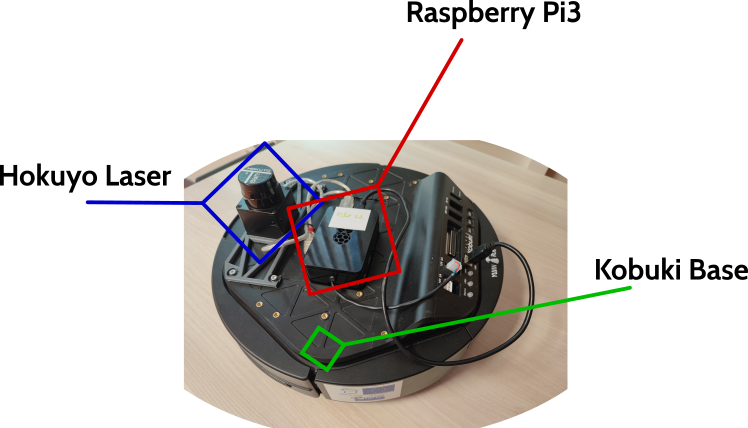

Robot Pibot (IMT Nord Europe)
Le robot mobile Tbot est une construction sur une base mobile Kobuki incluant un laser plan Hokuyo pour la détection des obstacles et une carte-ordinateur Raspberry-Pi3 (pi3) comme centre névralgique. L'architecture logicielle de pilotage du robot s'appuie sur le middleware ROS2 et le paquet tbot_node et ses dépendances.
Pour les besoins du challenge, le robot est équipé d'un bac pour recevoir les pièces triées.
Description du robot pibot et de sa pi3
Le robot pibot se compose :
- d'une base mobile Turtlebot2 - Kobuki dont le driver est inclus avec les paquets Tbot.
- d'un laser plan Hokuyo, connecté à ROS2 via urg_node.
- d'une carte-ordinateur Pi3 pré-installée avec Ubuntu 22.04 server et le driver du robot pibot.

La pi3 est pré-installée avec Ubuntu server 22.04, ROS2 Iron et tous les drivers nécessaires au robot.
Par défaut, la pi3 se connecte sur le réseau Wifi IOT.
Les noeuds de contrôle du robot sont automatiquement lancés au démarrage de la pi3 par le service mb6-tbot qui exécute le launch file minimal_launch.yaml du package tbot_node.
La variable d'environnement ROS_DOMAIN_ID est pré-configurée avec le numéro de votre robot afin d'éviter tout conflit sur le réseau.
Par exemple, le ROS_DOMAIN_ID du pibot22 est 22.
Les topics de ce robots ne sont donc accessibles que sur ce domaine ROS.
En complément: des CarteSD sont mises à votre disposition par RS, partenaire de ce Hackaton, pour vous permettre de tester vos propres configurations.
PC portable de travail
Vous disposez d'un PC portable préconfiguré sous Pop_OS (Ubuntu 22.04 amélioré) avec ROS2 Iron.
Le compte administrateur est ros mot de passe: ros.
Ce PC est également connecté au réseau wifi IOT.
Connexion via ROS
En modifiant le fichier ~/.bashrc, vous devez configurer vos terminaux sur le même ROS_DOMAIN_ID que votre pibot
export ROS_DOMAIN_ID=44 # pour le pibot44 par exemple.
Les outils de ros2 : rqt, ros2 node list, ros2 topic list,... pourront alors vous montrer les topics de votre pibot.
Pour envoyer des commandes de vitesse à votre pibot, deux topics sont disponibles : /multi/cmd_teleop ou /multi/cmd_nav.
Ils sont fournis par le noeud multiplexer qui gère les priorités.
En effet, le multiplexer considère l'opérateur (topic /multi/cmd_teleop) comme prioritaire sur la navigation autonome (/multi/cmd_nav).
Par conséquent, l'exécution du noeud suivant doit permettre de prendre le contrôle du robot:
ros2 run teleop_twist_keyboard teleop_twist_keyboard cmd_vel:=/multi/cmd_teleop
Le robot dispose de plusieurs capteurs.
À vous de les découvrir en explorant la liste des topics.
Notez cependant le principal: le laser, qui est diffusé sur le topic /scan.
Des tutoriels de prise en main du robot et le laser sont accessibles ici.
Connexion SSH sur la pi3
Vous disposez aussi d'un compte ros (mot de passe ros par défaut) sur la pi3 de votre pibot.
Vous pouvez vous connecter en ssh via l'IP de l'interface wifi de votre pi3.
Exemple :
ssh 10.100.50.18 # pour le pibot 18
Cette connexion ssh vous permet:
-
de modifier le mot de passe du compte
rossur la pi3 de votre robot via la commande :passwdchanger ce mot de passe par défaut est important mais se souvenir du nouveau mot de passe l'est plus encore ! -
de lancer des noeuds en local sur la pi3 afin de ne pas surcharger la bande passante du wifi qui introduit de la latence
-
d'arrêter correctement votre pi3 via la commande
sudo poweroff
Check list de démarrage
- Alumer le
pibot - Attendre une minute ou deux que la pi3 démarre lance tous les services de contrôle du robot
- Se connecter via ROS ou en SSH
Check list d'extinction
- Se connecter en SSH sur la pi3
sudo poweroffousudo shutdown -h now- attendre
- éteindre électriquement le robot (bouton on/off)
- mettre en charge le robot !